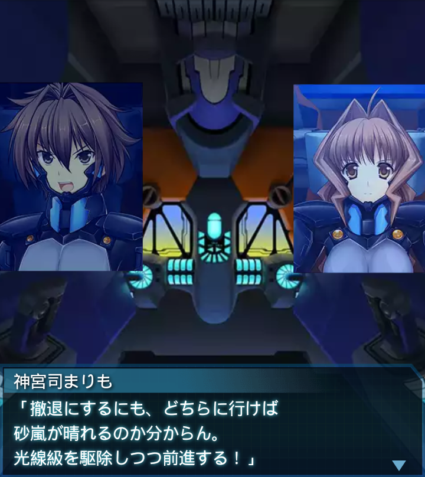

龍浪響
「想像してたより、砂嵐の中でも視界は悪くないな…。全く周りが
見えなくなるのかと思ったぜ」
神宮司まりも
「外部カメラでの視界確保は肉眼よりも優れている。それでも、精々
見えて数十メートル先だ」
龍浪響
「確かに霧の中にいるみたいだ…。突撃級にでも襲われたら厄介…」
龍浪響
「……ッ！？危ねぇ…！？何かが俺の機をかすめてったぞ…！？」
神宮司まりも
「…レーザーだ！よりによって、この視界が不明瞭な時に何発も…！
各機、乱数回避！」
龍浪響
「いや、かえって好都合だぜ！奴らにとっても視界は遮られてる
はず！！そして――」
龍浪響
「光線級は味方を撃たねえ！つまりこれだけ撃ってくるってことは射線
上に他のＢＥＴＡはいない！」
龍浪響
「大尉、突撃のチャンスだ！射線を追って、光線級を駆除
しましょう！」
『誰』
「根拠の薄い推測だが、このまま防戦一方では消耗するばかりだな。
危険極まりないが支持します」

神宮司まりも
「撤退にするにも、どちらに行けば砂嵐が晴れるのか分からん。
光線級を駆除しつつ前進する！」